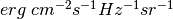

blackbody_nu¶
- astropy.analytic_functions.blackbody.blackbody_nu(in_x, temperature)[source] [edit on github]¶
Calculate blackbody flux per steradian,
 .
.Note
Use numpy.errstate to suppress Numpy warnings, if desired.
Warning
Output values might contain nan and inf.
Parameters: in_x : number, array-like, or Quantity
Frequency, wavelength, or wave number. If not a Quantity, it is assumed to be in Hz.
temperature : number or Quantity
Blackbody temperature. If not a Quantity, it is assumed to be in Kelvin.
Returns: flux : Quantity
Blackbody monochromatic flux in .
Raises: ValueError
Invalid temperature.
ZeroDivisionError
Wavelength is zero (when converting to frequency).